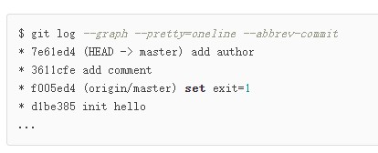
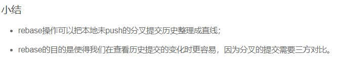

2021年1月9日 星期六 10时48分 多云
分支管理
分支管理
创建新分支dev，切换至新分支
git checkout -b dev
相当于
git branch dev
git checkout dev
查看当前分支
git branch
切换分支回master
git checkout master
合并分支(当前分支在master)
git merge dev
删除分支(必须先位于其他分支,现在位于master)
git branch -d dev
switch - 切换分支的新命令
创建并切换到新的分支
git switch -c dev
切换到已有分支master
git switch master
分支冲突
新建了一个分支feature1，经过一系列操作后
会产生合并冲突 - 文件存在冲突
可以用git merge feature1或git status查看
可以用带参数的git log 查看分支合并情况
git log --graph --pretty=oneline --abbrev-commit
最后删除分支feature1
git branch -d feature1
总结

分支管理策略
禁用快速合并方式
git merge --no-ff -m "merge with no-ff" dev
可以查看历史记录
Bug分支
工作进行到一半还没提交，需要新建分支修复bug的时候
储藏工作区
git stash
可以用git status查看工作区状态 是干净的
若bug在master上，创建临时分支issue-101
完成修改后，切换回master分支并合并issue-101，删除issue-101
回到工作分支dev
查看储藏的工作区
git stash list
然后恢复工作区
git stash apply
git stash drop
等价于
git stash pop
可以多次stash，然后恢复指定的stash
git stash apply stash@{0}
因为dev分支是从master上分离出来的，因此dev上也有相同的bug需要被修改
有两个选择：
1.可以重复操作一次
2.直接从master合并修改bug的那一小部分到dev
复制特定提交到当前分支
git cherry-pick 版本号
分支合并
软件开发中，总有无穷无尽的新的功能要不断添加进来。
每添加一个新功能，最好新建一个feature分支，在上面开发，完成后，合并，最后，删除该feature分支。
如下
git switch -c feature-vulcan
....
git add vlucan.py
git commit -m "add feature vulcan"
准备合并
这时却被通知需要销毁
删除分支
git branch -d feature-vulcan
-提示：销毁失败，该分支还未合并，如果删除则会丢失修改
那就强行删除
git branch -D feature-vulcan
-删除成功
多人协作
当你从远程仓库克隆时，实际上Git自动把本地的master分支和远程的master分支对应起来了
远程库库名默认为git
查看远程库信息
git remote
或
git remote -v
推送分支
git push origin master
抓取分支
小伙伴在自己的电脑（把SSH Key添加到Github）
从远程库克隆
...
只能看到本地的master分支
如果想在dev分支上开发创建远程origin的dev到本地
需要创建本地dev分支
git checkout -b dev origin/dev
提交冲突：
先抓分支，在本地合并，然后再推送
git pull
要先指定本地分支和远程分支的链接
设置链接
git branch --set-upstream-to=origin/dev dev
再git pull
多人协作小结
Rebase - 把本地未push的分支提交历史整理成直线
在与远程分支同步后，对于hello.py做两次提交
尝试推送
git push origin master
-推送失败
先pull一下
git pull
查看状态
git status
-较远程分支提前3个提交
用git log查看
发现有点乱
这时可以使用rebase
git rebase
再用git log查看

分叉的提交已经成直线型了
推送到远程
git push origin master
查看效果
git log
远程分支的提交历史也是一条直线。
git rebase前
git rebase后
尽量在本地自己的分支rebase，避免在公共分支使用
因为会修改提交历史，存在隐患
拓展：
......
